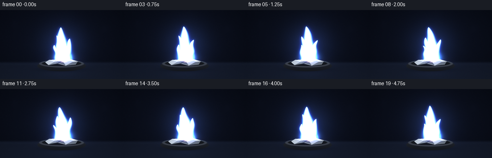
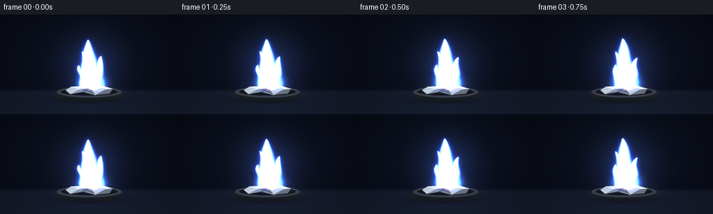
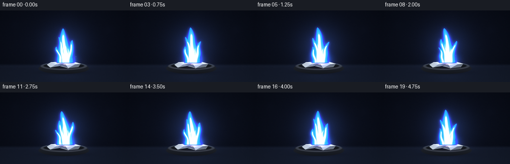
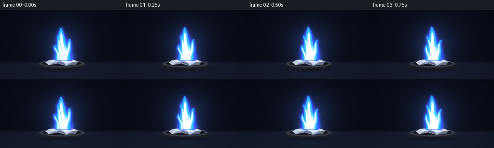

CODING AGENTS AS PIXEL WORLD MODELS
traex/GPT-5.6-Sol · material_0011
点击播放 · 原生 RGB 像素
此结果可播放，但该运行尚未通过最终提交审核。页面展示不代表评测通过。
逐轮保存的候选
回放视频、检查图与代码变化。
每份候选均可单独播放。实际图片检查记录在下方工具轨迹中。
候选 01播放与检查图
点击播放 · 原生 RGB 像素


展开代码变化
--- 上一保存版本
+++ 本次保存版本
@@ -0,0 +1,259 @@
+from pathlib import Path
+import math
+import numpy as np
+from PIL import Image, ImageDraw, ImageFilter
+import artifact_io
+
+# Procedural, supersampled cinematic visualization of burning aluminium.
+W, H, N, FPS = 256, 144, 20, 4.0
+S = 3
+w, h = W*S, H*S
+Y, X = np.mgrid[0:h, 0:w].astype(np.float32)
+x = X / S
+y = Y / S
+rng = np.random.default_rng(41027)
+
+
+def smoothstep(a, b, v):
+ q = np.clip((v-a)/(b-a), 0, 1)
+ return q*q*(3-2*q)
+
+
+def add_color(img, color, mask, strength=1.0):
+ """Add emissive color under a [0,1] mask."""
+ m = np.asarray(mask, dtype=np.float32)
+ if m.max() > 1.01:
+ m = m / 255.0
+ img += m[..., None] * np.asarray(color, np.float32)[None, None, :] * strength
+
+
+def over_color(img, color, mask):
+ m = np.clip(np.asarray(mask, np.float32), 0, 1)[..., None]
+ img[:] = img*(1-m) + np.asarray(color, np.float32)[None, None, :]*m
+
+
+def blurred(mask, radius):
+ im = Image.fromarray(np.uint8(np.clip(mask, 0, 1)*255), 'L')
+ return np.asarray(im.filter(ImageFilter.GaussianBlur(radius*S)), np.float32)/255.0
+
+
+# Deep laboratory background, with a faint slate work surface.
+rad = np.sqrt(((x-128)/175)**2 + ((y-68)/115)**2)
+base = np.zeros((h, w, 3), np.float32)
+base[..., 0] = 6 + 8*np.clip(1-rad, 0, 1)
+base[..., 1] = 9 + 10*np.clip(1-rad, 0, 1)
+base[..., 2] = 17 + 17*np.clip(1-rad, 0, 1)
+# surface begins behind the burner
+surf = smoothstep(106, 113, y)
+base += surf[..., None] * np.array([9, 11, 15], np.float32)
+base += (np.clip((y-108)/36, 0, 1)*8)[..., None] * np.array([0.35, 0.48, 0.62])
+# restrained film grain, constant in scene so it does not shimmer
+noise = rng.normal(0, 1.35, (h, w, 1)).astype(np.float32)
+base += noise
+# very soft horizon sheen
+base += (np.exp(-((y-111)/3.2)**2)*3.0)[..., None]*np.array([0.5,0.7,1.0])
+
+# Fixed dim background bokeh (subtle visual depth).
+bokeh = Image.new('L', (w, h), 0)
+bd = ImageDraw.Draw(bokeh)
+for bx, by, br, val in [(30,28,5,17),(218,39,7,13),(198,85,3,14),(60,72,2,12),(239,18,3,10)]:
+ bd.ellipse(((bx-br)*S,(by-br)*S,(bx+br)*S,(by+br)*S), fill=val)
+bokeh = np.asarray(bokeh.filter(ImageFilter.GaussianBlur(4*S)), np.float32)/255
+base += bokeh[...,None]*np.array([22,27,48])
+
+# Refractory dish masks (its top remains visible around the metal).
+shadow = np.exp(-(((x-128)/57)**2 + ((y-124)/7.2)**2)*2.2)
+dish_body_q = ((x-128)/52)**2 + ((y-116.5)/11.5)**2
+dish_body = 1-smoothstep(0.87, 1.03, dish_body_q)
+top_q = ((x-128)/48)**2 + ((y-111.8)/8.2)**2
+top = 1-smoothstep(0.86, 1.02, top_q)
+inner_q = ((x-128)/42.5)**2 + ((y-111.3)/5.8)**2
+inner = 1-smoothstep(0.84, 1.03, inner_q)
+rim = np.clip(top-inner,0,1)
+
+# Deterministic spark launch data. They appear at different points through the 5 seconds.
+sparks = []
+for i in range(42):
+ launch = rng.uniform(-0.6, 4.9)
+ vx = rng.normal(0, 17) + rng.choice([-1,1])*rng.uniform(5,18)
+ vy = rng.uniform(24, 61)
+ life = rng.uniform(.38, .88)
+ sparks.append((launch, vx, vy, life, rng.uniform(.55,1.0)))
+
+frames = []
+for fi in range(N):
+ t = fi/FPS
+ phase = fi*0.48
+ frame = base.copy()
+
+ # Broad illumination from the brilliant flame, gently breathing but always steady.
+ power = 0.96 + 0.025*math.sin(phase*1.11) + 0.016*math.sin(phase*2.37)
+ halo = np.exp(-(((x-131)/51)**2 + ((y-74)/53)**2)*1.6)
+ frame += halo[...,None]*np.array([18,28,56],np.float32)*power
+ lowglow = np.exp(-(((x-132)/38)**2 + ((y-107)/18)**2)*2.0)
+ frame += lowglow[...,None]*np.array([28,24,44],np.float32)*power
+
+ # Thin, translucent smoke curls visible above and just outside the flame.
+ smoke_layer = Image.new('L',(w,h),0)
+ sd = ImageDraw.Draw(smoke_layer)
+ for j in range(4):
+ pts=[]
+ for k in range(24):
+ sy = 51-k*2.35-j*2
+ sx = 132 + j*2.4 + 4.8*math.sin(k*.28 + phase*.16 + j*1.6) + .10*k
+ pts.append((int(sx*S),int(sy*S)))
+ sd.line(pts, fill=17-j*2, width=(3+j)*S, joint='curve')
+ sm = np.asarray(smoke_layer.filter(ImageFilter.GaussianBlur(5*S)),np.float32)/255
+ over_color(frame, (48,55,77), sm*.40)
+
+ # Cast shadow and a shallow graphite refractory dish.
+ frame *= (1-0.40*shadow[...,None])
+ # ceramic body is darker on the lower side
+ dish_col = np.zeros_like(frame)
+ vertical = np.clip((y-106)/22,0,1)
+ dish_col[...,0] = 34-15*vertical
+ dish_col[...,1] = 38-16*vertical
+ dish_col[...,2] = 45-17*vertical
+ m = dish_body[...,None]
+ frame = frame*(1-m*.93) + dish_col*m*.93
+ over_color(frame, (43,47,56), top*.90)
+ over_color(frame, (15,18,23), inner*.82)
+ over_color(frame, (67,72,83), rim*.60)
+ # bluish reflection on rim facing the flame
+ rimlight = rim*np.exp(-((x-131)/35)**2)*smoothstep(116,107,y)
+ add_color(frame,(40,92,155),rimlight,.38*power)
+
+ # Draw the clearly metallic, crumpled aluminium fragment and its facets.
+ metal = Image.new('RGBA',(w,h),(0,0,0,0))
+ md = ImageDraw.Draw(metal,'RGBA')
+ def poly(points, fill):
+ md.polygon([(int(a*S),int(b*S)) for a,b in points],fill=fill)
+ # an irregular strip, exposed on both sides of the ignition point
+ poly([(94,109),(102,104),(120,103),(130,106),(145,102),(162,107),(157,114),(137,116),(119,112),(101,115)], (128,139,150,255))
+ poly([(94,109),(102,104),(120,103),(113,108),(101,115)], (188,198,207,255))
+ poly([(102,104),(120,103),(130,106),(113,108)], (231,238,241,255))
+ poly([(113,108),(130,106),(137,116),(119,112)], (89,99,109,255))
+ poly([(130,106),(145,102),(151,108),(137,116)], (183,192,198,255))
+ poly([(145,102),(162,107),(151,108)], (225,231,233,255))
+ poly([(151,108),(162,107),(157,114),(137,116)], (102,111,121,255))
+ # creases and sharp silvery highlights
+ md.line([(97*S,109*S),(120*S,103*S),(113*S,108*S),(137*S,116*S)], fill=(245,250,252,180), width=1*S)
+ md.line([(130*S,106*S),(145*S,102*S),(151*S,108*S)], fill=(255,255,255,195), width=1*S)
+ md.line([(101*S,115*S),(119*S,112*S),(130*S,106*S)], fill=(45,52,60,190), width=1*S)
+ ma = np.asarray(metal,np.float32)
+ alpha = ma[...,3:4]/255
+ frame = frame*(1-alpha)+ma[...,:3]*alpha
+
+ # Orange-white molten ignition bead where the foil is burning.
+ bead = np.exp(-(((x-132)/8.0)**2 + ((y-106)/3.1)**2)*1.65)
+ add_color(frame,(255,96,18),blurred(bead,.9),.62)
+ add_color(frame,(255,244,194),bead**1.7,.90)
+
+ # Sparks behind the main flame: continuous but restrained, bright white aluminium flecks.
+ spark_glow = Image.new('L',(w,h),0)
+ spark_core = Image.new('RGBA',(w,h),(0,0,0,0))
+ gd = ImageDraw.Draw(spark_glow)
+ cd = ImageDraw.Draw(spark_core,'RGBA')
+ for launch,vx,vy,life,brightness in sparks:
+ age=t-launch
+ if 0 <= age <= life:
+ px=132 + vx*age + 2.3*math.sin(age*7 + launch*2)
+ py=103 - vy*age + 36*age*age
+ fade=(1-age/life)**.65
+ if -3<px<W+3 and -3<py<H+3:
+ # short tail points back along the trajectory
+ dx=(vx+16*math.cos(age*7+launch*2))*0.035
+ dy=(-vy+72*age)*0.035
+ width=max(1,int(S*(.45+.5*fade)))
+ gd.line([(int((px-dx)*S),int((py-dy)*S)),(int(px*S),int(py*S))],fill=int(175*fade*brightness),width=2*S)
+ col=(255,248,218,int(245*fade*brightness))
+ cd.line([(int((px-dx*.6)*S),int((py-dy*.6)*S)),(int(px*S),int(py*S))],fill=col,width=width)
+ sg=np.asarray(spark_glow.filter(ImageFilter.GaussianBlur(2.2*S)),np.float32)/255
+ add_color(frame,(72,115,255),sg,.90)
+ sc=np.asarray(spark_core,np.float32)
+ sa=sc[...,3:4]/255
+ frame=frame*(1-sa)+sc[...,:3]*sa
+
+ # Flame field: several coherent curved tongues sharing a stable base.
+ tongues = [
+ # x-base, height, base width, lean, phase offset
+ (132.0, 69.0 + 2.1*math.sin(phase*.77), 15.5, -7.0, 0.2),
+ (127.5, 50.0 + 2.4*math.sin(phase*.91+1.0), 10.0, -10.0, 2.0),
+ (136.5, 44.0 + 1.8*math.sin(phase*1.03+2.2), 9.5, 10.5, 4.0),
+ (121.5, 31.5 + 1.5*math.sin(phase*.85+0.4), 7.2, -8.0, 5.1),
+ ]
+ field=np.zeros((h,w),np.float32)
+ inner_field=np.zeros_like(field)
+ for idx,(xb,ht,bw,lean,po) in enumerate(tongues):
+ s=(105.0-y)/ht
+ inside=smoothstep(-.035,.02,s)*(1-smoothstep(.965,1.02,s))
+ ss=np.clip(s,0,1)
+ # low-frequency travelling bend gives natural motion without size pumping
+ center=xb + lean*(ss**1.45) + (1.55+idx*.28)*np.sin(ss*7.2 + phase*(.78+idx*.07)+po)*ss
+ width=.45 + bw*((1-ss)**.68)*(0.93+0.07*np.sin(ss*11-phase*.7+po))
+ d=np.abs(x-center)/np.maximum(width,.25)
+ f=np.exp(-0.83*d**3.2)*inside
+ field=np.maximum(field,f)
+ # Inner white ribbon remains mostly near the lower two-thirds.
+ di=np.abs(x-(center + .4*np.sin(ss*9+phase+po)))/np.maximum(width*.50,.22)
+ inn=np.exp(-.95*di**3.0)*inside*(1-smoothstep(.74,.96,ss))
+ inner_field=np.maximum(inner_field,inn)
+
+ outer=smoothstep(.07,.34,field)
+ middle=smoothstep(.29,.67,field)
+ hot=smoothstep(.63,.94,inner_field)
+ # Make the base broad and incandescent, characteristic of burning metal.
+ basefan=np.exp(-(((x-132)/14.5)**2 + ((y-99)/10.5)**2)*1.0)*smoothstep(107,102,y)
+ outer=np.maximum(outer,basefan*.80)
+ middle=np.maximum(middle,basefan*.70)
+
+ # Colored aura, then saturated layered body. Violet rim + cyan body + white core.
+ add_color(frame,(28,42,255),blurred(outer,7.0),.30*power)
+ add_color(frame,(45,78,255),blurred(outer,2.6),.52*power)
+ # edge ring is strongly cobalt-violet
+ edge=np.clip(outer-middle*.78,0,1)
+ add_color(frame,(62,37,255),edge,.84)
+ add_color(frame,(28,118,255),outer,.72)
+ add_color(frame,(30,223,255),middle,.78)
+ add_color(frame,(196,250,255),middle**1.45,.73)
+ add_color(frame,(255,255,248),hot,1.05)
+
+ # Distinct white-hot lower core, brilliant but with retained cyan detail.
+ corebase=np.exp(-(((x-132)/6.3)**2 + ((y-94)/17.5)**2)*1.2)*smoothstep(106,103,y)
+ add_color(frame,(255,254,226),corebase,1.05)
+
+ # Fine luminous striations inside the flame suggest upward flow.
+ streak=np.zeros_like(field)
+ for j in range(3):
+ ht=42-j*5
+ ss=np.clip((104-y)/ht,0,1)
+ valid=smoothstep(0,.05,ss)*(1-smoothstep(.72,.92,ss))
+ cx=128.5+j*3.2 + (-3+j*2.5)*ss + 1.1*np.sin(ss*9+phase*(1.1+j*.08)+j)
+ streak=np.maximum(streak,np.exp(-((x-cx)/(0.55+j*.15))**2)*valid)
+ add_color(frame,(235,255,255),streak,.78)
+
+ # A few foreground pinpricks at the base.
+ pin = Image.new('RGBA',(w,h),(0,0,0,0)); pd=ImageDraw.Draw(pin,'RGBA')
+ for j in range(5):
+ ang=phase*1.37+j*2.1
+ px=132+math.sin(ang)* (8+j*1.7)
+ py=102-((fi*1.7+j*5.3)%17)
+ a=int(150*(1-((fi*1.7+j*5.3)%17)/18))
+ r=max(1,int(S*.45))
+ pd.ellipse((int(px*S-r),int(py*S-r),int(px*S+r),int(py*S+r)),fill=(255,250,220,a))
+ pa=np.asarray(pin,np.float32); aa=pa[...,3:4]/255
+ frame=frame*(1-aa)+pa[...,:3]*aa
+
+ # Gentle optical bloom from clipped highlights.
+ lum=np.clip((frame.max(axis=2)-170)/100,0,1)
+ bloom=blurred(lum,2.8)
+ add_color(frame,(80,125,255),bloom,.18)
+
+ frame=np.clip(frame,0,255).astype(np.uint8)
+ # Supersampled downscale for clean edges and natural small sparks.
+ out=np.asarray(Image.fromarray(frame,'RGB').resize((W,H),Image.Resampling.LANCZOS))
+ frames.append(out)
+
+frames=np.stack(frames).astype(np.uint8)
+artifact_io.save(frames, Path(__file__).resolve().parent)
+print(f"saved {len(frames)} RGB frames, {W}x{H}, {FPS:g} fps")
候选 02播放与检查图
点击播放 · 原生 RGB 像素


展开代码变化
--- 上一保存版本
+++ 本次保存版本
@@ -73,11 +73,11 @@
# Deterministic spark launch data. They appear at different points through the 5 seconds.
sparks = []
-for i in range(42):
+for i in range(64):
launch = rng.uniform(-0.6, 4.9)
vx = rng.normal(0, 17) + rng.choice([-1,1])*rng.uniform(5,18)
vy = rng.uniform(24, 61)
- life = rng.uniform(.38, .88)
+ life = rng.uniform(.46, 1.05)
sparks.append((launch, vx, vy, life, rng.uniform(.55,1.0)))
frames = []
@@ -164,7 +164,7 @@
# short tail points back along the trajectory
dx=(vx+16*math.cos(age*7+launch*2))*0.035
dy=(-vy+72*age)*0.035
- width=max(1,int(S*(.45+.5*fade)))
+ width=max(1,int(S*(.62+.52*fade)))
gd.line([(int((px-dx)*S),int((py-dy)*S)),(int(px*S),int(py*S))],fill=int(175*fade*brightness),width=2*S)
col=(255,248,218,int(245*fade*brightness))
cd.line([(int((px-dx*.6)*S),int((py-dy*.6)*S)),(int(px*S),int(py*S))],fill=col,width=width)
@@ -207,20 +207,21 @@
outer=np.maximum(outer,basefan*.80)
middle=np.maximum(middle,basefan*.70)
- # Colored aura, then saturated layered body. Violet rim + cyan body + white core.
+ # Colored aura, then a translucent layered body. Explicit color compositing
+ # preserves the unusual cobalt/cyan structure instead of flattening to white.
add_color(frame,(28,42,255),blurred(outer,7.0),.30*power)
add_color(frame,(45,78,255),blurred(outer,2.6),.52*power)
# edge ring is strongly cobalt-violet
edge=np.clip(outer-middle*.78,0,1)
- add_color(frame,(62,37,255),edge,.84)
- add_color(frame,(28,118,255),outer,.72)
- add_color(frame,(30,223,255),middle,.78)
- add_color(frame,(196,250,255),middle**1.45,.73)
- add_color(frame,(255,255,248),hot,1.05)
+ over_color(frame,(25,54,242),outer*.91)
+ over_color(frame,(77,31,255),edge*.57)
+ over_color(frame,(28,190,255),middle*.83)
+ over_color(frame,(175,244,255),(inner_field**1.35)*.63)
+ over_color(frame,(255,255,245),hot*.90)
# Distinct white-hot lower core, brilliant but with retained cyan detail.
corebase=np.exp(-(((x-132)/6.3)**2 + ((y-94)/17.5)**2)*1.2)*smoothstep(106,103,y)
- add_color(frame,(255,254,226),corebase,1.05)
+ over_color(frame,(255,253,222),corebase*.74)
# Fine luminous striations inside the flame suggest upward flow.
streak=np.zeros_like(field)
可观测工具轨迹
实际执行的命令与返回图片。
命令 1exit 0
/bin/bash -lc "cat prompt.txt && printf '\\n---RULES---\\n' && cat GENERATION_RULES.md && printf '\\n---SPEC---\\n' && cat task_spec.json"
命令 2exit 0
/bin/bash -lc "find . -maxdepth 2 -type f -printf '%p %s bytes\\n' | sort | head -200"
命令 3exit 0
/bin/bash -lc "sed -n '1,240p' artifact_io.py"
命令 4exit 0
/bin/bash -lc "cat > generate.py <<'PY'
from pathlib import Path
import math
import numpy as np
from PIL import Image, ImageDraw, ImageFilter
import artifact_io
# Procedural, supersampled cinematic visualization of burning aluminium.
W, H, N, FPS = 256, 144, 20, 4.0
S = 3
w, h = W*S, H*S
Y, X = np.mgrid[0:h, 0:w].astype(np.float32)
x = X / S
y = Y / S
rng = np.random.default_rng(41027)
def smoothstep(a, b, v):
q = np.clip((v-a)/(b-a), 0, 1)
return q*q*(3-2*q)
def add_color(img, color, mask, strength=1.0):
\"\"\"Add emissive color under a [0,1] mask.\"\"\"
m = np.asarray(mask, dtype=np.float32)
if m.max() > 1.01:
m = m / 255.0
img += m[..., None] * np.asarray(color, np.float32)[None, None, :] * strength
def over_color(img, color, mask):
m = np.clip(np.asarray(mask, np.float32), 0, 1)[..., None]
img[:] = img*(1-m) + np.asarray(color, np.float32)[None, None, :]*m
def blurred(mask, radius):
im = Image.fromarray(np.uint8(np.clip(mask, 0, 1)*255), 'L')
return np.asarray(im.filter(ImageFilter.GaussianBlur(radius*S)), np.float32)/255.0
# Deep laboratory background, with a faint slate work surface.
rad = np.sqrt(((x-128)/175)**2 + ((y-68)/115)**2)
base = np.zeros((h, w, 3), np.float32)
base[..., 0] = 6 + 8*np.clip(1-rad, 0, 1)
base[..., 1] = 9 + 10*np.clip(1-rad, 0, 1)
base[..., 2] = 17 + 17*np.clip(1-rad, 0, 1)
# surface begins behind the burner
surf = smoothstep(106, 113, y)
base += surf[..., None] * np.array([9, 11, 15], np.float32)
base += (np.clip((y-108)/36, 0, 1)*8)[..., None] * np.array([0.35, 0.48, 0.62])
# restrained film grain, constant in scene so it does not shimmer
noise = rng.normal(0, 1.35, (h, w, 1)).astype(np.float32)
base += noise
# very soft horizon sheen
base += (np.exp(-((y-111)/3.2)**2)*3.0)[..., None]*np.array([0.5,0.7,1.0])
# Fixed dim background bokeh (subtle visual depth).
bokeh = Image.new('L', (w, h), 0)
bd = ImageDraw.Draw(bokeh)
for bx, by, br, val in [(30,28,5,17),(218,39,7,13),(198,85,3,14),(60,72,2,12),(239,18,3,10)]:
bd.ellipse(((bx-br)*S,(by-br)*S,(bx+br)*S,(by+br)*S), fill=val)
bokeh = np.asarray(bokeh.filter(ImageFilter.GaussianBlur(4*S)), np.float32)/255
base += bokeh[...,None]*np.array([22,27,48])
# Refractory dish masks (its top remains visible around the metal).
shadow = np.exp(-(((x-128)/57)**2 + ((y-124)/7.2)**2)*2.2)
dish_body_q = ((x-128)/52)**2 + ((y-116.5)/11.5)**2
dish_body = 1-smoothstep(0.87, 1.03, dish_body_q)
top_q = ((x-128)/48)**2 + ((y-111.8)/8.2)**2
top = 1-smoothstep(0.86, 1.02, top_q)
inner_q = ((x-128)/42.5)**2 + ((y-111.3)/5.8)**2
inner = 1-smoothstep(0.84, 1.03, inner_q)
rim = np.clip(top-inner,0,1)
# Deterministic spark launch data. They appear at different points through the 5 seconds.
sparks = []
for i in range(42):
launch = rng.uniform(-0.6, 4.9)
vx = rng.normal(0, 17) + rng.choice([-1,1])*rng.uniform(5,18)
vy = rng.uniform(24, 61)
life = rng.uniform(.38, .88)
sparks.append((launch, vx, vy, life, rng.uniform(.55,1.0)))
frames = []
for fi in range(N):
t = fi/FPS
phase = fi*0.48
frame = base.copy()
# Broad illumination from the brilliant flame, gently breathing but always steady.
power = 0.96 + 0.025*math.sin(phase*1.11) + 0.016*math.sin(phase*2.37)
halo = np.exp(-(((x-131)/51)**2 + ((y-74)/53)**2)*1.6)
frame += halo[...,None]*np.array([18,28,56],np.float32)*power
lowglow = np.exp(-(((x-132)/38)**2 + ((y-107)/18)**2)*2.0)
frame += lowglow[...,None]*np.array([28,24,44],np.float32)*power
# Thin, translucent smoke curls visible above and just outside the flame.
smoke_layer = Image.new('L',(w,h),0)
sd = ImageDraw.Draw(smoke_layer)
for j in range(4):
pts=[]
for k in range(24):
sy = 51-k*2.35-j*2
sx = 132 + j*2.4 + 4.8*math.sin(k*.28 + phase*.16 + j*1.6) + .10*k
pts.append((int(sx*S),int(sy*S)))
sd.line(pts, fill=17-j*2, width=(3+j)*S, joint='curve')
sm = np.asarray(smoke_layer.filter(ImageFilter.GaussianBlur(5*S)),np.float32)/255
over_color(frame, (48,55,77), sm*.40)
# Cast shadow and a shallow graphite refractory dish.
frame *= (1-0.40*shadow[...,None])
# ceramic body is darker on the lower side
dish_col = np.zeros_like(frame)
vertical = np.clip((y-106)/22,0,1)
dish_col[...,0] = 34-15*vertical
dish_col[...,1] = 38-16*vertical
dish_col[...,2] = 45-17*vertical
m = dish_body[...,None]
frame = frame*(1-m*.93) + dish_col*m*.93
over_color(frame, (43,47,56), top*.90)
over_color(frame, (15,18,23), inner*.82)
over_color(frame, (67,72,83), rim*.60)
# bluish reflection on rim facing the flame
rimlight = rim*np.exp(-((x-131)/35)**2)*smoothstep(116,107,y)
add_color(frame,(40,92,155),rimlight,.38*power)
# Draw the clearly metallic, crumpled aluminium fragment and its facets.
metal = Image.new('RGBA',(w,h),(0,0,0,0))
md = ImageDraw.Draw(metal,'RGBA')
def poly(points, fill):
md.polygon([(int(a*S),int(b*S)) for a,b in points],fill=fill)
# an irregular strip, exposed on both sides of the ignition point
poly([(94,109),(102,104),(120,103),(130,106),(145,102),(162,107),(157,114),(137,116),(119,112),(101,115)], (128,139,150,255))
poly([(94,109),(102,104),(120,103),(113,108),(101,115)], (188,198,207,255))
poly([(102,104),(120,103),(130,106),(113,108)], (231,238,241,255))
poly([(113,108),(130,106),(137,116),(119,112)], (89,99,109,255))
poly([(130,106),(145,102),(151,108),(137,116)], (183,192,198,255))
poly([(145,102),(162,107),(151,108)], (225,231,233,255))
poly([(151,108),(162,107),(157,114),(137,116)], (102,111,121,255))
# creases and sharp silvery highlights
md.line([(97*S,109*S),(120*S,103*S),(113*S,108*S),(137*S,116*S)], fill=(245,250,252,180), width=1*S)
md.line([(130*S,106*S),(145*S,102*S),(151*S,108*S)], fill=(255,255,255,195), width=1*S)
md.line([(101*S,115*S),(119*S,112*S),(130*S,106*S)], fill=(45,52,60,190), width=1*S)
ma = np.asarray(metal,np.float32)
alpha = ma[...,3:4]/255
frame = frame*(1-alpha)+ma[...,:3]*alpha
# Orange-white molten ignition bead where the foil is burning.
bead = np.exp(-(((x-132)/8.0)**2 + ((y-106)/3.1)**2)*1.65)
add_color(frame,(255,96,18),blurred(bead,.9),.62)
add_color(frame,(255,244,194),bead**1.7,.90)
# Sparks behind the main flame: continuous but restrained, bright white aluminium flecks.
spark_glow = Image.new('L',(w,h),0)
spark_core = Image.new('RGBA',(w,h),(0,0,0,0))
gd = ImageDraw.Draw(spark_glow)
cd = ImageDraw.Draw(spark_core,'RGBA')
for launch,vx,vy,life,brightness in sparks:
age=t-launch
if 0 <= age <= life:
px=132 + vx*age + 2.3*math.sin(age*7 + launch*2)
py=103 - vy*age + 36*age*age
fade=(1-age/life)**.65
if -3<px<W+3 and -3<py<H+3:
# short tail points back along the trajectory
dx=(vx+16*math.cos(age*7+launch*2))*0.035
dy=(-vy+72*age)*0.035
width=max(1,int(S*(.45+.5*fade)))
gd.line([(int((px-dx)*S),int((py-dy)*S)),(int(px*S),int(py*S))],fill=int(175*fade*brightness),width=2*S)
col=(255,248,218,int(245*fade*brightness))
cd.line([(int((px-dx*.6)*S),int((py-dy*.6)*S)),(int(px*S),int(py*S))],fill=col,width=width)
sg=np.asarray(spark_glow.filter(ImageFilter.GaussianBlur(2.2*S)),np.float32)/255
add_color(frame,(72,115,255),sg,.90)
sc=np.asarray(spark_core,np.float32)
sa=sc[...,3:4]/255
frame=frame*(1-sa)+sc[...,:3]*sa
# Flame field: several coherent curved tongues sharing a stable base.
tongues = [
# x-base, height, base width, lean, phase offset
(132.0, 69.0 + 2.1*math.sin(phase*.77), 15.5, -7.0, 0.2),
(127.5, 50.0 + 2.4*math.sin(phase*.91+1.0), 10.0, -10.0, 2.0),
(136.5, 44.0 + 1.8*math.sin(phase*1.03+2.2), 9.5, 10.5, 4.0),
(121.5, 31.5 + 1.5*math.sin(phase*.85+0.4), 7.2, -8.0, 5.1),
]
field=np.zeros((h,w),np.float32)
inner_field=np.zeros_like(field)
for idx,(xb,ht,bw,lean,po) in enumerate(tongues):
s=(105.0-y)/ht
inside=smoothstep(-.035,.02,s)*(1-smoothstep(.965,1.02,s))
ss=np.clip(s,0,1)
# low-frequency travelling bend gives natural motion without size pumping
center=xb + lean*(ss**1.45) + (1.55+idx*.28)*np.sin(ss*7.2 + phase*(.78+idx*.07)+po)*ss
width=.45 + bw*((1-ss)**.68)*(0.93+0.07*np.sin(ss*11-phase*.7+po))
d=np.abs(x-center)/np.maximum(width,.25)
f=np.exp(-0.83*d**3.2)*inside
field=np.maximum(field,f)
# Inner white ribbon remains mostly near the lower two-thirds.
di=np.abs(x-(center + .4*np.sin(ss*9+phase+po)))/np.maximum(width*.50,.22)
inn=np.exp(-.95*di**3.0)*inside*(1-smoothstep(.74,.96,ss))
inner_field=np.maximum(inner_field,inn)
outer=smoothstep(.07,.34,field)
middle=smoothstep(.29,.67,field)
hot=smoothstep(.63,.94,inner_field)
# Make the base broad and incandescent, characteristic of burning metal.
basefan=np.exp(-(((x-132)/14.5)**2 + ((y-99)/10.5)**2)*1.0)*smoothstep(107,102,y)
outer=np.maximum(outer,basefan*.80)
middle=np.maximum(middle,basefan*.70)
# Colored aura, then saturated layered body. Violet rim + cyan body + white core.
add_color(frame,(28,42,255),blurred(outer,7.0),.30*power)
add_color(frame,(45,78,255),blurred(outer,2.6),.52*power)
# edge ring is strongly cobalt-violet
edge=np.clip(outer-middle*.78,0,1)
add_color(frame,(62,37,255),edge,.84)
add_color(frame,(28,118,255),outer,.72)
add_color(frame,(30,223,255),middle,.78)
add_color(frame,(196,250,255),middle**1.45,.73)
add_color(frame,(255,255,248),hot,1.05)
# Distinct white-hot lower core, brilliant but with retained cyan detail.
corebase=np.exp(-(((x-132)/6.3)**2 + ((y-94)/17.5)**2)*1.2)*smoothstep(106,103,y)
add_color(frame,(255,254,226),corebase,1.05)
# Fine luminous striations inside the flame suggest upward flow.
streak=np.zeros_like(field)
for j in range(3):
ht=42-j*5
ss=np.clip((104-y)/ht,0,1)
valid=smoothstep(0,.05,ss)*(1-smoothstep(.72,.92,ss))
cx=128.5+j*3.2 + (-3+j*2.5)*ss + 1.1*np.sin(ss*9+phase*(1.1+j*.08)+j)
streak=np.maximum(streak,np.exp(-((x-cx)/(0.55+j*.15))**2)*valid)
add_color(frame,(235,255,255),streak,.78)
# A few foreground pinpricks at the base.
pin = Image.new('RGBA',(w,h),(0,0,0,0)); pd=ImageDraw.Draw(pin,'RGBA')
for j in range(5):
ang=phase*1.37+j*2.1
px=132+math.sin(ang)* (8+j*1.7)
py=102-((fi*1.7+j*5.3)%17)
a=int(150*(1-((fi*1.7+j*5.3)%17)/18))
r=max(1,int(S*.45))
pd.ellipse((int(px*S-r),int(py*S-r),int(px*S+r),int(py*S+r)),fill=(255,250,220,a))
pa=np.asarray(pin,np.float32); aa=pa[...,3:4]/255
frame=frame*(1-aa)+pa[...,:3]*aa
# Gentle optical bloom from clipped highlights.
lum=np.clip((frame.max(axis=2)-170)/100,0,1)
bloom=blurred(lum,2.8)
add_color(frame,(80,125,255),bloom,.18)
frame=np.clip(frame,0,255).astype(np.uint8)
# Supersampled downscale for clean edges and natural small sparks.
out=np.asarray(Image.fromarray(frame,'RGB').resize((W,H),Image.Resampling.LANCZOS))
frames.append(out)
frames=np.stack(frames).astype(np.uint8)
artifact_io.save(frames, Path(__file__).resolve().parent)
print(f\"saved {len(frames)} RGB frames, {W}x{H}, {FPS:g} fps\")
PY
python generate.py
ls -lh pixels.npz inspection.png index.html frames/00.png"保存候选 2 份；完成命令 4 次；可验证图片返回 0 张。原始 API 响应与完整日志保留在本地。